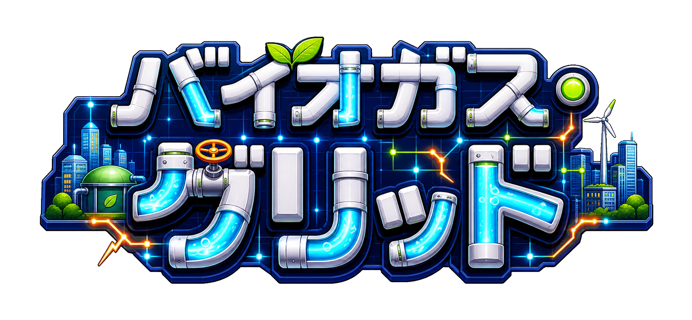

← もどる
♪
KOBEC ECO GAME PARK

パイプをつないで 流して、
廃棄物のちからで神戸を灯せ。
─ 神戸から始めるECOLOGY ─
はじめる ▶
カード
引き継ぎコード
初期化
株式会社コベック「バイオガスKOBE」｜デモ版
ステージ
★ 0 / 36
カード
タイトル
あそびかた 1/3
つぎへ ▶
STAGE CLEAR!
★
★
★
バイオガスKOBE 豆知識
新しいランドマークカードを手に入れた！
もう一回
一覧
つぎへ ▶
神戸ランドマークカード
とじる
引き継ぎコード
星とカードの記録を、べつの端末に引き継げるで。
あなたのコード（タップで全選択）
コードを入力して読み込み
とじる
読み込む
データの初期化
セーブデータ（星・カード）をぜんぶ消して最初からにするで。
この操作は元に戻せへん。ほんまにええか？
やめる
初期化する